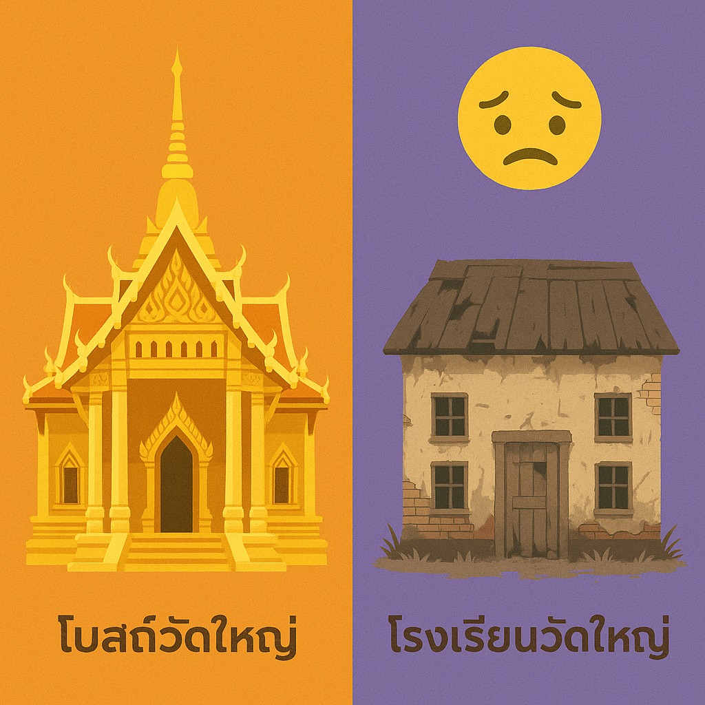

เมื่อวัดใหญ่โตแต่โรงเรียนข้างกันทรุดโทรม คำถามจึงไม่ใช่แค่เรื่องงบ แต่คือศรัทธาของสังคมกำลังไหลไปหาอะไร
{kind=link}

โพสต์นี้เริ่มจากภาพที่หลายคนเคยเห็นแต่ไม่ค่อยพูดถึงตรง ๆ คือการไปเจอวัดใหญ่ที่งดงามอลังการ เต็มไปด้วยสัญลักษณ์ของศรัทธาและทรัพยากร ขณะที่เพียงเดินออกมาไม่กี่ก้าวกลับพบโรงเรียนที่ใช้ชื่อเดียวกัน แต่สภาพทรุดโทรม ขาดอุปกรณ์ ครูเหนื่อย และนักเรียนขาดโอกาสอย่างเห็นได้ชัด
สิ่งที่ผู้เขียนตั้งคำถามจึงไม่ใช่เพียงว่าเงินอยู่คนละกองหรือหน่วยงานคนละกรม แต่คือศรัทธาของสังคมกำลังไหลไปหาอะไร เพราะถ้าศรัทธาถูกเทไปที่อิฐปูนมากกว่าการสร้างเด็กให้เติบโตเป็นคนดี ความย้อนแย้งนี้ก็ไม่ใช่เรื่องบริหารอย่างเดียว แต่เป็นเรื่องค่านิยมของทั้งสังคม
ปัญหาไม่ได้อยู่แค่วัดกับโรงเรียนอยู่คนละระบบ แต่อยู่ที่เรายอมรับภาพนี้จนกลายเป็นเรื่องปกติ
ผู้เขียนยอมรับตรง ๆ ว่าเข้าใจเรื่องโครงสร้างราชการ วัดกับโรงเรียนอยู่คนละกรม งบคนละถัง แต่ก็ยังยืนยันว่าคำถามของประชาชนไม่ควรจบแค่คำอธิบายทางระบบ เพราะต่อให้ระบบแยกกันอยู่ ความจริงที่เห็นตรงหน้าก็คือวัดมั่งคั่ง ขณะที่โรงเรียนซึ่งควรเป็นที่สร้างอนาคตของเด็กกลับขาดแคลน
เมื่อภาพแบบนี้เกิดขึ้นซ้ำ ๆ จนไม่มีใครสะดุดใจ เรากำลังเสี่ยงทำให้ความไม่สมดุลกลายเป็นสิ่งปกติ และปล่อยให้สังคมให้รางวัลกับสิ่งที่มองเห็นง่ายอย่างความอลังการ มากกว่าสิ่งที่สำคัญกว่าแต่ไม่หวือหวาอย่างการพัฒนาคุณภาพของคน
ศาสนาควรอยู่ที่การสร้างคน ไม่ใช่ถูกลดเหลือเพียงพิธีกรรม อาคาร หรือความหรูหราของวัด
ช่วงกลางของโพสต์ชัดมากว่า ผู้เขียนไม่ได้ปฏิเสธศาสนา ตรงกันข้าม เขาย้ำว่าเคารพศาสนาเสมอ เพราะศีลธรรมคือหลักในการอยู่ร่วมกันของมนุษย์ แต่ความเคารพนั้นไม่ได้แปลว่าต้องยอมรับการตีกรอบศาสนาให้เหลือเพียงการสร้างวัดให้หรูหรือจัดงานบุญให้อลังการ
นี่ทำให้แก่นของบทความอยู่ที่การเรียกร้องให้ศาสนากลับไปสู่ภารกิจสำคัญที่สุด คือการสร้างคนให้ดี ซึ่งในอดีตวัดเคยทำหน้าที่เป็นทั้งโรงเรียน โรงทาน และศูนย์กลางความรู้ของชุมชน หากวันนี้วัดจำนวนมากขยับไปเป็นแลนด์มาร์กถ่ายรูปหรือสถานที่ประกอบพิธีกรรมสำหรับผู้มีอันจะกิน ก็ยิ่งควรถามว่าศาสนาในสังคมไทยกำลังขยับออกห่างจากรากเดิมหรือไม่
การทำบุญที่มีความหมายอาจไม่ใช่การเติมทรัพยากรให้สิ่งที่มีอยู่แล้ว แต่คือการหันไปช่วยที่ที่ขาดจริง
ข้อสรุปเชิงปฏิบัติของโพสต์นี้แรงและชัดมาก คือเมื่อผู้เขียนเห็นวัดหรูแต่โรงเรียนโทรม เขาจะไม่เช่าพระ ไม่ซื้อดอกไม้ ไม่ถวายสังฆทาน แต่จะเอาเงินไปบริจาคให้โรงเรียนแทน นี่ไม่ใช่การปฏิเสธศาสนา แต่เป็นการตีความศรัทธาใหม่ว่า การทำดีควรไปอยู่ในจุดที่ช่วยสร้างคนและลดความเหลื่อมล้ำได้จริง
ช่วงที่โยงเรื่องพระผู้ใหญ่ ข่าวสีกา และประโยคว่า พระก็คือคน ก็ทำให้บทความนี้ยิ่งชัดว่า ผู้เขียนไม่ผูกศาสนาไว้กับตัวบุคคลหรือเปลือกภายนอก แต่ผูกกับสัจธรรม จริยธรรม และการตัดสินใจที่ดี ดังนั้น คำถามปิดว่ามันคือสังคมแบบไหนกันแน่ จึงเป็นคำถามใหญ่ต่อทั้งศรัทธา การศึกษา และลำดับความสำคัญของสังคมไทยในปัจจุบัน